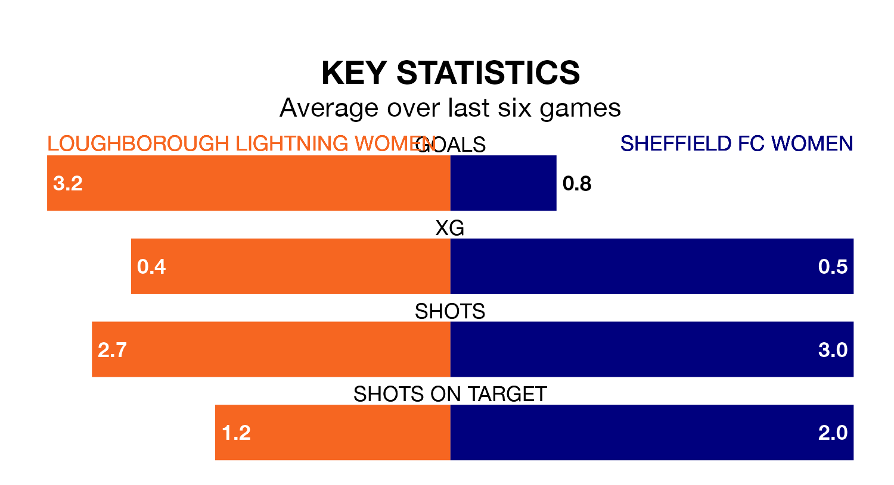

Loughborough Lightning Women host Sheffield FC Women in Sunday's early match looking to bounce back from defeat last time out in the Women's National League Division One Midlands.
Loughborough Lightning, who sit second in the league after 18 games, fell to a 2-3 away defeat to Sutton Coldfield Town Women on March 31.
They face a Sheffield FC side who picked up a win in their last match, a 2-1 victory against Boldmere St. Michaels Women, and who sit 11th in the table.
With 11 goals in 18 games so far this season, Sheffield FC are the league's lowest scorers with 0.6 goals per game. And they are conceding at an average rate, letting in 32 goals at a rate of 1.8 per game.
Loughborough Lightning, meanwhile, are above average scorers, with 2.7 goals per game, compared to a league average of 1.8. They have conceded 0.9 goals per game.
The home side are in fantastic form in the Women's National League Division One Midlands, with five wins and a draw from their last six games.
With a win and a draw over that period, the visitors' form is much worse – they have taken four points from 18, compared to Loughborough Lightning's 16.
In the last five years, Loughborough Lightning and Sheffield FC have played each other on four occasions. Loughborough Lightning won three of them and they drew once.
On average, Loughborough Lightning scored 2.0 goals and Sheffield FC 0.2 in those matches.
Their last meeting was on August 20, when Loughborough Lightning won 1-0 away.
Updated: 15:40 (UTC), 18/04/24